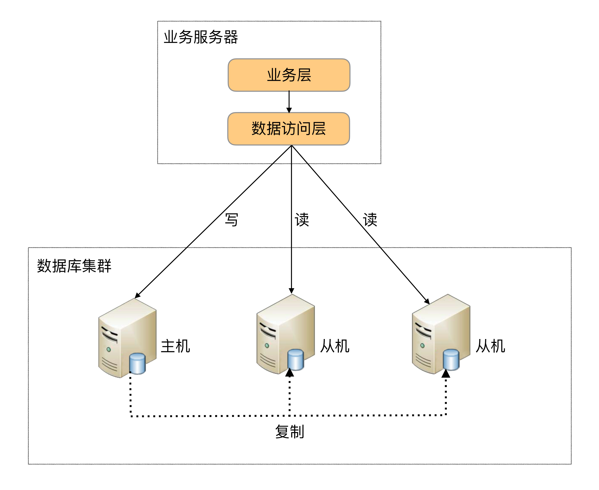
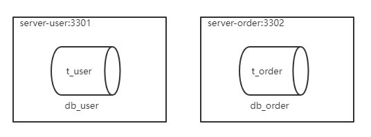

第01章 高性能架构模式 互联网业务兴起之后，海量用户加上海量数据的特点，单个数据库服务器已经难以满足业务需要，必须考虑数据库集群的方式来提升性能。高性能数据库集群的第一种方式是“读写分离”，第二种方式是“数据库分片”
1、读写分离架构 读写分离原理： 读写分离的基本原理是将数据库读写操作分散到不同的节点上，下面是其基本架构图：
读写分离的基本实现：
主库负责处理事务性的增删改操作，从库负责处理查询操作，能够有效的避免由数据更新导致的行锁，使得整个系统的查询性能得到极大的改善。读写分离是根据 SQL 语义的分析，将读操作和写操作分别路由至主库与从库。
通过一主多从的配置方式，可以将查询请求均匀的分散到多个数据副本，能够进一步的提升系统的处理能力。
使用多主多从的方式，不但能够提升系统的吞吐量，还能够提升系统的可用性，可以达到在任何一个数据库宕机，甚至磁盘物理损坏的情况下仍然不影响系统的正常运行。
下图展示了根据业务需要，将用户表的写操作和读操路由到不同的数据库的方案：
CAP 理论：
CAP 定理（CAP theorem）又被称作布鲁尔定理（Brewer’s theorem），是加州大学伯克利分校的计算机科学家埃里克·布鲁尔（Eric Brewer）在 2000 年的 ACM PODC 上提出的一个猜想。对于设计分布式系统的架构师来说，CAP 是必须掌握的理论。
在一个分布式系统中，当涉及读写操作时，只能保证一致性（Consistence）、可用性（Availability）、分区容错性（Partition Tolerance）三者中的两个，另外一个必须被牺牲。
C 一致性（Consistency）：对某个指定的客户端来说，读操作保证能够返回最新的写操作结果
A 可用性（Availability）：非故障的节点在合理的时间内返回合理的响应（不是错误和超时的响应）
P 分区容忍性（Partition Tolerance）：当出现网络分区后（可能是丢包，也可能是连接中断，还可能是拥塞），系统能够继续“履行职责”
CAP特点：
2、数据库分片架构 读写分离的问题：
读写分离分散了数据库读写操作的压力，但没有分散存储压力，为了满足业务数据存储的需求，就需要将存储分散到多台数据库服务器上。
数据分片：
将存放在单一数据库中的数据分散地存放至多个数据库或表中，以达到提升性能瓶颈以及可用性的效果。 数据分片的有效手段是对关系型数据库进行分库和分表。数据分片的拆分方式又分为垂直分片和水平分片。
2.1、垂直分片 垂直分库：
按照业务拆分的方式称为垂直分片，又称为纵向拆分，它的核心理念是专库专用。 在拆分之前，一个数据库由多个数据表构成，每个表对应着不同的业务。而拆分之后，则是按照业务将表进行归类，分布到不同的数据库中，从而将压力分散至不同的数据库。
下图展示了根据业务需要，将用户表和订单表垂直分片到不同的数据库的方案：
垂直拆分可以缓解数据量和访问量带来的问题，但无法根治。如果垂直拆分之后，表中的数据量依然超过单节点所能承载的阈值，则需要水平分片来进一步处理。
垂直分表：
垂直分表适合将表中某些不常用的列，或者是占了大量空间的列拆分出去。
假设我们是一个婚恋网站，用户在筛选其他用户的时候，主要是用 age 和 sex 两个字段进行查询，而 nickname 和 description 两个字段主要用于展示，一般不会在业务查询中用到。description 本身又比较长，因此我们可以将这两个字段独立到另外一张表中，这样在查询 age 和 sex 时，就能带来一定的性能提升。
垂直分表引入的复杂性主要体现在表操作的数量要增加。例如，原来只要一次查询就可以获取 name、age、sex、nickname、description，现在需要两次查询，一次查询获取 name、age、sex，另外一次查询获取 nickname、description。
水平分表适合表行数特别大的表，水平分表属于水平分片。
2.2、水平分片 水平分片又称为横向拆分。 相对于垂直分片，它不再将数据根据业务逻辑分类，而是通过某个字段（或某几个字段），根据某种规则将数据分散至多个库或表中，每个分片仅包含数据的一部分。 例如：根据主键分片，偶数主键的记录放入 0 库（或表），奇数主键的记录放入 1 库（或表），如下图所示。
单表进行切分后，是否将多个表分散在不同的数据库服务器中，可以根据实际的切分效果来确定。
阿里巴巴Java开发手册：
【推荐】单表行数超过 500 万行或者单表容量超过 2GB，才推荐进行分库分表。
说明：如果预计三年后的数据量根本达不到这个级别，请不要在创建表时就分库分表。
3、读写分离和数据分片架构 下图展现了将数据分片与读写分离一同使用时，应用程序与数据库集群之间的复杂拓扑关系。
4、实现方式 读写分离和数据分片具体的实现方式一般有两种： 程序代码封装和中间件封装。
4.1、程序代码封装 程序代码封装指在代码中抽象一个数据访问层（或中间层封装），实现读写操作分离和数据库服务器连接的管理。
其基本架构是： 以读写分离为例

4.2、中间件封装 中间件封装指的是独立一套系统出来，实现读写操作分离和数据库服务器连接的管理。对于业务服务器来说，访问中间件和访问数据库没有区别，在业务服务器看来，中间件就是一个数据库服务器。
基本架构是： 以读写分离为例
4.3、常用解决方案 Apache ShardingSphere（程序级别和中间件级别）
MyCat（数据库中间件）
第02章 ShardingSphere 1、简介 官网：https://shardingsphere.apache.org/index_zh.html
文档：https://shardingsphere.apache.org/document/5.1.1/cn/overview/
Apache ShardingSphere 由 JDBC、Proxy 和 Sidecar（规划中）这 3 款既能够独立部署，又支持混合部署配合使用的产品组成。
2、ShardingSphere-JDBC 程序代码封装
定位为轻量级 Java 框架，在 Java 的 JDBC 层提供的额外服务。 它使用客户端直连数据库，以 jar 包形式提供服务，无需额外部署和依赖，可理解为增强版的 JDBC 驱动，完全兼容 JDBC 和各种 ORM 框架。
3、ShardingSphere-Proxy 中间件封装
定位为透明化的数据库代理端，提供封装了数据库二进制协议的服务端版本，用于完成对异构语言的支持。 目前提供 MySQL 和 PostgreSQL版本，它可以使用任何兼容 MySQL/PostgreSQL 协议的访问客户端（如：MySQL Command Client, MySQL Workbench, Navicat 等）操作数据，对 DBA 更加友好。
第03章 MySQL主从同步 1、MySQL主从同步原理
基本原理：
slave会从master读取binlog来进行数据同步
具体步骤：
step1：master将数据改变记录到二进制日志（binary log）中。step2： 当slave上执行 start slave 命令之后，slave会创建一个 IO 线程用来连接master，请求master中的binlog。step3：当slave连接master时，master会创建一个 log dump 线程，用于发送 binlog 的内容。在读取 binlog 的内容的操作中，会对主节点上的 binlog 加锁，当读取完成并发送给从服务器后解锁。step4：IO 线程接收主节点 binlog dump 进程发来的更新之后，保存到 中继日志（relay log） 中。step5：slave的SQL线程，读取relay log日志，并解析成具体操作，从而实现主从操作一致，最终数据一致。
2、一主多从配置 服务器规划：使用docker方式创建，主从服务器IP一致，端口号不一致
主服务器：容器名atguigu-mysql-master，端口3306
从服务器：容器名atguigu-mysql-slave1，端口3307
从服务器：容器名atguigu-mysql-slave2，端口3308
注意： 如果此时防火墙是开启的，则先关闭防火墙，并重启docker，否则后续安装的MySQL无法启动
1 2 3 4 5 6 # 关闭docker # 关闭防火墙 # 启动docker
2.1、准备主服务器
step1：在docker中创建并启动MySQL主服务器： 端口3306
1 2 3 4 5 6 7 docker run -d \
默认情况下MySQL的binlog日志是自动开启的，可以通过如下配置定义一些可选配置
1 vim /atguigu/mysql/master/conf/my.cnf
配置如下内容
1 2 3 4 5 6 7 8 9 10 11 12 [mysqld] server-id =1 binlog_format =STATEMENT
重启MySQL容器
1 docker restart atguigu-mysql-master
binlog格式说明：
binlog_format=STATEMENT：日志记录的是主机数据库的写指令，性能高，但是now()之类的函数以及获取系统参数的操作会出现主从数据不同步的问题。
binlog_format=ROW（默认）：日志记录的是主机数据库的写后的数据，批量操作时性能较差，解决now()或者 user()或者 @@hostname 等操作在主从机器上不一致的问题。
binlog_format=MIXED：是以上两种level的混合使用，有函数用ROW，没函数用STATEMENT，但是无法识别系统变量
binlog-ignore-db和binlog-do-db的优先级问题：
1 2 3 4 5 6 # 进入容器：env LANG=C.UTF-8 避免容器中显示中文乱码 # 进入容器内的mysql命令行 # 修改默认密码校验方式
1 2 3 4 5 6 7 8 CREATE USER 'atguigu_slave' @'%' ;ALTER USER 'atguigu_slave' @'%' IDENTIFIED WITH mysql_native_password BY '123456' ;GRANT REPLICATION SLAVE ON * .* TO 'atguigu_slave' @'%' ;
执行完此步骤后不要再操作主服务器MYSQL，防止主服务器状态值变化
记下File和Position的值。执行完此步骤后不要再操作主服务器MYSQL，防止主服务器状态值变化。
2.2、准备从服务器 可以配置多台从机slave1、slave2…，这里以配置slave1为例
step1：在docker中创建并启动MySQL从服务器： 端口3307
1 2 3 4 5 6 7 docker run -d \
1 vim /atguigu/mysql/slave1/conf/my.cnf
配置如下内容：
重启MySQL容器
1 docker restart atguigu-mysql-slave1
1 2 3 4 5 6 # 进入容器： # 进入容器内的mysql命令行 # 修改默认密码校验方式
在从机 上执行以下SQL操作
1 2 3 CHANGE MASTER TO MASTER_HOST= '192.168.100.201' , = 'atguigu_slave' ,MASTER_PASSWORD= '123456' , MASTER_PORT= 3306 ,= 'binlog.000003' ,MASTER_LOG_POS= 1357 ;
2.3、启动主从同步 启动从机的复制功能，执行SQL：
1 2 3 START SLAVE;SHOW SLAVE STATUS\G
两个关键进程： 下面两个参数都是Yes，则说明主从配置成功！
2.4、实现主从同步 在主机中执行以下SQL，在从机中查看数据库、表和数据是否已经被同步
1 2 3 4 5 6 7 8 9 CREATE DATABASE db_user;CREATE TABLE t_user (BIGINT AUTO_INCREMENT,VARCHAR (30 ),PRIMARY KEY (id)INSERT INTO t_user(uname) VALUES ('zhang3' );INSERT INTO t_user(uname) VALUES (@@hostname );
2.5、停止和重置 需要的时候，可以使用如下SQL语句
1 2 3 4 5 6 7 8 9
2.6、常见问题 问题1 启动主从同步后，常见错误是Slave_IO_Running： No 或者 Connecting 的情况，此时查看下方的 Last_IO_ERROR错误日志，根据日志中显示的错误信息在网上搜索解决方案即可
典型的错误例如： Last_IO_Error: Got fatal error 1236 from master when reading data from binary log: 'Client requested master to start replication from position > file size'
解决方案：
1 2 3 4 5 6 7 8 9 10 SHOW MASTER STATUS;SHOW MASTER STATUS;
问题2 启动docker容器后提示 WARNING: IPv4 forwarding is disabled. Networking will not work.
此错误，虽然不影响主从同步的搭建，但是如果想从远程客户端通过以下方式连接docker中的MySQL则没法连接
1 C:\Users\administrator>mysql -h 192.168.100.201 -P 3306 -u root -p
解决方案：
1 2 3 4 5 6 # 修改配置文件： # 追加 # 接着重启网络
第04章 ShardingSphere-JDBC读写分离 1、创建SpringBoot程序 1.1、创建项目 项目类型：Spring Initializr
SpringBoot脚手架：http://start.aliyun.com
项目名：sharding-jdbc-demo
SpringBoot版本：2.3.7.RELEASE
1.2、添加依赖 1 2 3 4 5 6 7 8 9 10 11 12 13 14 15 16 17 18 19 20 21 22 23 24 25 26 27 28 29 30 31 32 33 34 35 36 37 38 39 40 41 42 <dependencies > <dependency > <groupId > org.springframework.boot</groupId > <artifactId > spring-boot-starter-web</artifactId > </dependency > <dependency > <groupId > org.apache.shardingsphere</groupId > <artifactId > shardingsphere-jdbc-core-spring-boot-starter</artifactId > <version > 4.1.1</version > </dependency > <dependency > <groupId > mysql</groupId > <artifactId > mysql-connector-java</artifactId > <scope > runtime</scope > </dependency > <dependency > <groupId > com.baomidou</groupId > <artifactId > mybatis-plus-boot-starter</artifactId > <version > 3.3.1</version > </dependency > <dependency > <groupId > org.projectlombok</groupId > <artifactId > lombok</artifactId > <optional > true</optional > </dependency > <dependency > <groupId > org.springframework.boot</groupId > <artifactId > spring-boot-starter-test</artifactId > <scope > test</scope > <exclusions > <exclusion > <groupId > org.junit.vintage</groupId > <artifactId > junit-vintage-engine</artifactId > </exclusion > </exclusions > </dependency > </dependencies >
1.3、创建实体类 1 2 3 4 5 6 7 8 9 10 11 12 package com.atguigu.shardingjdbcdemo.entity;@TableName("t_user") @Data public class User {@TableId(type = IdType.AUTO) private Long id;private String uname;
1.4、创建Mapper 1 2 3 4 5 package com.atguigu.shardingjdbcdemo.mapper;@Mapper public interface UserMapper extends BaseMapper <User> {
1.5、配置读写分离 application.properties：
1 2 3 4 5 6 7 8 9 10 11 12 13 14 15 16 17 18 19 20 21 22 23 24 25 26 27 28 29 30 31 32 33 34 35 36 37 38 39 40 41 42 43 44 45 46 47 48 49 50 51 52 spring.application.name =sharging-jdbc-demo spring.profiles.active =dev spring.shardingsphere.mode.type =Memory spring.shardingsphere.datasource.names =master,slave1,slave2 spring.shardingsphere.datasource.master.type =com.zaxxer.hikari.HikariDataSource spring.shardingsphere.datasource.master.driver-class-name =com.mysql.jdbc.Driver spring.shardingsphere.datasource.master.jdbc-url =jdbc:mysql://192.168.100.201:3306/db_user spring.shardingsphere.datasource.master.username =root spring.shardingsphere.datasource.master.password =123456 spring.shardingsphere.datasource.slave1.type =com.zaxxer.hikari.HikariDataSource spring.shardingsphere.datasource.slave1.driver-class-name =com.mysql.jdbc.Driver spring.shardingsphere.datasource.slave1.jdbc-url =jdbc:mysql://192.168.100.201:3307/db_user spring.shardingsphere.datasource.slave1.username =root spring.shardingsphere.datasource.slave1.password =123456 spring.shardingsphere.datasource.slave2.type =com.zaxxer.hikari.HikariDataSource spring.shardingsphere.datasource.slave2.driver-class-name =com.mysql.jdbc.Driver spring.shardingsphere.datasource.slave2.jdbc-url =jdbc:mysql://192.168.100.201:3308/db_user spring.shardingsphere.datasource.slave2.username =root spring.shardingsphere.datasource.slave2.password =123456 spring.shardingsphere.rules.readwrite-splitting.data-sources.myds.type =Static spring.shardingsphere.rules.readwrite-splitting.data-sources.myds.props.write-data-source-name =master spring.shardingsphere.rules.readwrite-splitting.data-sources.myds.props.read-data-source-names =slave1,slave2 spring.shardingsphere.rules.readwrite-splitting.data-sources.myds.load-balancer-name =alg_round spring.shardingsphere.rules.readwrite-splitting.load-balancers.alg_round.type =ROUND_ROBIN spring.shardingsphere.rules.readwrite-splitting.load-balancers.alg_random.type =RANDOM spring.shardingsphere.rules.readwrite-splitting.load-balancers.alg_weight.type =WEIGHT spring.shardingsphere.rules.readwrite-splitting.load-balancers.alg_weight.props.slave1 =1 spring.shardingsphere.rules.readwrite-splitting.load-balancers.alg_weight.props.slave2 =2 spring.shardingsphere.props.sql-show =true
2、测试 2.1、读写分离测试 1 2 3 4 5 6 7 8 9 10 11 12 13 14 15 16 17 18 19 20 package com.atguigu.shardingjdbcdemo;@SpringBootTest class ReadwriteTest {@Autowired private UserMapper userMapper;@Test public void testInsert () {User user = new User ();"张三丰" );
2.2、事务测试 为了保证主从库间的事务一致性，避免跨服务的分布式事务，ShardingSphere-JDBC的主从模型中，事务中的数据读写均用主库。
不添加@Transactional：insert对主库操作，select对从库操作
添加@Transactional：则insert和select均对主库操作
注意： 在JUnit环境下的@Transactional注解，默认情况下就会对事务进行回滚（即使在没加注解@Rollback，也会对事务回滚）
1 2 3 4 5 6 7 8 9 10 11 12 13 @Transactional @Test public void testTrans () {User user = new User ();"铁锤" );null );
2.3、负载均衡测试 1 2 3 4 5 6 7 8 9 10 11 @Test public void testSelectAll () {null );null );
也可以在web请求中测试负载均衡
1 2 3 4 5 6 7 8 9 10 11 12 13 14 15 16 17 18 package com.atguigu.shardingjdbcdemo.controller;@RestController @RequestMapping("/userController") public class UserController {@Autowired private UserMapper userMapper;@GetMapping("selectAll") public void selectAll () {null );
第05章 ShardingSphere-JDBC垂直分片 1、准备服务器 服务器规划：使用docker方式创建如下容器

1.1、创建server-user容器
1 2 3 4 5 6 7 docker run -d \
1 2 3 4 5 6 # 进入容器： # 进入容器内的mysql命令行 # 修改默认密码插件
1 2 3 4 5 6 7 CREATE DATABASE db_user;CREATE TABLE t_user (BIGINT AUTO_INCREMENT,VARCHAR (30 ),PRIMARY KEY (id)
1.2、创建server-order容器
step1：创建容器：
1 2 3 4 5 6 7 docker run -d \
step2：登录MySQL服务器：
1 2 3 4 5 6 # 进入容器： # 进入容器内的mysql命令行 # 修改默认密码插件
step3：创建数据库：
1 2 3 4 5 6 7 8 9 CREATE DATABASE db_order;CREATE TABLE t_order (BIGINT AUTO_INCREMENT,VARCHAR (30 ),BIGINT ,DECIMAL (10 ,2 ),PRIMARY KEY(id)
2、程序实现 2.1、创建实体类 1 2 3 4 5 6 7 8 9 10 11 package com.atguigu.shardingjdbcdemo.entity;@TableName("t_order") @Data public class Order {@TableId(type = IdType.AUTO) private Long id;private String orderNo;private Long userId;private BigDecimal amount;
2.2、创建Mapper 1 2 3 4 5 package com.atguigu.shardingjdbcdemo.mapper;@Mapper public interface OrderMapper extends BaseMapper <Order> {
2.3、配置垂直分片 1 2 3 4 5 6 7 8 9 10 11 12 13 14 15 16 17 18 19 20 21 22 23 24 25 26 27 28 29 30 31 32 33 spring.application.name =sharding-jdbc-demo spring.profiles.active =dev spring.shardingsphere.datasource.names =server-user,server-order spring.shardingsphere.datasource.server-user.type =com.zaxxer.hikari.HikariDataSource spring.shardingsphere.datasource.server-user.driver-class-name =com.mysql.jdbc.Driver spring.shardingsphere.datasource.server-user.jdbc-url =jdbc:mysql://192.168.100.201:3301/db_user spring.shardingsphere.datasource.server-user.username =root spring.shardingsphere.datasource.server-user.password =123456 spring.shardingsphere.datasource.server-order.type =com.zaxxer.hikari.HikariDataSource spring.shardingsphere.datasource.server-order.driver-class-name =com.mysql.jdbc.Driver spring.shardingsphere.datasource.server-order.jdbc-url =jdbc:mysql://192.168.100.201:3302/db_order spring.shardingsphere.datasource.server-order.username =root spring.shardingsphere.datasource.server-order.password =123456 spring.shardingsphere.rules.sharding.tables.t_user.actual-data-nodes =server-user.t_user spring.shardingsphere.rules.sharding.tables.t_order.actual-data-nodes =server-order.t_order spring.shardingsphere.props.sql-show =true
3、测试垂直分片 1 2 3 4 5 6 7 8 9 10 11 12 13 14 15 16 17 18 19 20 21 22 23 24 25 26 27 28 29 30 31 32 33 34 35 36 37 38 39 package com.atguigu.shardingjdbcdemo;@SpringBootTest public class ShardingTest {@Autowired private UserMapper userMapper;@Autowired private OrderMapper orderMapper;@Test public void testInsertOrderAndUser () {User user = new User ();"强哥" );Order order = new Order ();"ATGUIGU001" );new BigDecimal (100 ));@Test public void testSelectFromOrderAndUser () {User user = userMapper.selectById(1L );Order order = orderMapper.selectById(1L );
常见错误
ShardingSphere-JDBC远程连接的方式默认的密码加密规则是：mysql_native_password
因此需要在服务器端修改服务器的密码加密规则，如下：
1 ALTER USER 'root' @'%' IDENTIFIED WITH mysql_native_password BY '123456' ;
第06章 ShardingSphere-JDBC水平分片 1、准备服务器 服务器规划：使用docker方式创建如下容器
1.1、创建server-order0容器
1.2、创建server-order1容器
1 2 3 4 5 6 7 8 9 10 11 12 13 14 15 16 CREATE DATABASE db_order;CREATE TABLE t_order0 (BIGINT ,VARCHAR (30 ),BIGINT ,DECIMAL (10 ,2 ),PRIMARY KEY(id) CREATE TABLE t_order1 (BIGINT ,VARCHAR (30 ),BIGINT ,DECIMAL (10 ,2 ),PRIMARY KEY(id)
2、基本水平分片 2.1、基本配置 1 2 3 4 5 6 7 8 9 spring.application.name =sharging-jdbc-demo spring.profiles.active =dev spring.shardingsphere.mode.type =Memory spring.shardingsphere.props.sql-show =true
2.2、数据源配置 1 2 3 4 5 6 7 8 9 10 11 12 13 14 15 16 17 18 19 20 21 22 23 24 spring.shardingsphere.datasource.names =server-user,server-order0,server-order1 spring.shardingsphere.datasource.server-user.type =com.zaxxer.hikari.HikariDataSource spring.shardingsphere.datasource.server-user.driver-class-name =com.mysql.jdbc.Driver spring.shardingsphere.datasource.server-user.jdbc-url =jdbc:mysql://192.168.100.201:3301/db_user spring.shardingsphere.datasource.server-user.username =root spring.shardingsphere.datasource.server-user.password =123456 spring.shardingsphere.datasource.server-order.type =com.zaxxer.hikari.HikariDataSource spring.shardingsphere.datasource.server-order.driver-class-name =com.mysql.jdbc.Driver spring.shardingsphere.datasource.server-order.jdbc-url =jdbc:mysql://192.168.100.201:3310/db_order spring.shardingsphere.datasource.server-order.username =root spring.shardingsphere.datasource.server-order.password =123456 spring.shardingsphere.datasource.server-order.type =com.zaxxer.hikari.HikariDataSource spring.shardingsphere.datasource.server-order.driver-class-name =com.mysql.jdbc.Driver spring.shardingsphere.datasource.server-order.jdbc-url =jdbc:mysql://192.168.100.201:3311/db_order spring.shardingsphere.datasource.server-order.username =root spring.shardingsphere.datasource.server-order.password =123456
2.3、标椎分片表配置 1 2 3 4 5 6 spring.shardingsphere.rules.sharding.tables.t_user.actual-data-nodes =server-user.t_user spring.shardingsphere.rules.sharding.tables.t_order.actual-data-nodes =server-order0.t_order0,server-order0.t_order1,server-order1.t_order0,server-order1.t_order1
修改Order实体类的主键策略：
1 2 @TableId(type = IdType.ASSIGN_ID)
测试：保留上面配置中的一个分片表节点分别进行测试，检查每个分片节点是否可用
1 2 3 4 5 6 7 8 9 10 11 12 @Test public void testInsertOrder () {Order order = new Order ();"ATGUIGU001" );1L );new BigDecimal (100 ));
2.4、行表达式 优化上一步的分片表配置https://shardingsphere.apache.org/document/5.1.1/cn/features/sharding/concept/inline-expression/
1 2 3 4 5 6 spring.shardingsphere.rules.sharding.tables.t_user.actual-data-nodes =server-user.t_user spring.shardingsphere.rules.sharding.tables.t_order.actual-data-nodes =server-order$->{0..1}.t_order$->{0..1}
2.5、分片算法配置 水平分库： user_id为偶数时，数据插入server-order0服务器，user_id为奇数时，数据插入server-order1服务器。这样分片的好处是，同一个用户的订单数据，一定会被插入到同一台服务器上，查询一个用户的订单时效率较高。
1 2 3 4 5 6 7 8 9 10 11 12 13 14 15 16 17 18 spring.shardingsphere.rules.sharding.tables.t_order.database-strategy.standard.sharding-column =user_id spring.shardingsphere.rules.sharding.tables.t_order.database-strategy.standard.sharding-algorithm-name =alg_inline_userid spring.shardingsphere.rules.sharding.sharding-algorithms.alg_inline_userid.type =INLINE spring.shardingsphere.rules.sharding.sharding-algorithms.alg_inline_userid.props.algorithm-expression =server-order$->{user_id % 2} spring.shardingsphere.rules.sharding.sharding-algorithms.alg_mod.type =MOD spring.shardingsphere.rules.sharding.sharding-algorithms.alg_mod.props.sharding-count =2
为了方便测试，先设置只在 t_order0表上进行测试
1 xxx.actual-data-nodes =server-order$->{0..1}.t_order0
测试：可以分别测试行表达式分片算法和取模分片算法
1 2 3 4 5 6 7 8 9 10 11 12 13 14 15 @Test public void testInsertOrderDatabaseStrategy () {for (long i = 0 ; i < 4 ; i++) {Order order = new Order ();"ATGUIGU001" );1 );new BigDecimal (100 ));
水平分表： order_no的哈希值为偶数时，数据插入对应服务器的t_order0表，order_no的哈希值为奇数时，数据插入对应服务器的t_order1表。因为order_no是字符串形式，因此不能直接取模。
1 2 3 4 5 6 7 8 9 10 11 12 13 14 spring.shardingsphere.rules.sharding.tables.t_order.table-strategy.standard.sharding-column =order_no spring.shardingsphere.rules.sharding.tables.t_order.table-strategy.standard.sharding-algorithm-name =alg_hash_mod spring.shardingsphere.rules.sharding.sharding-algorithms.alg_hash_mod.type =HASH_MOD spring.shardingsphere.rules.sharding.sharding-algorithms.alg_hash_mod.props.sharding-count =2
测试前不要忘记将如下节点改回原来的状态
1 xxx.actual-data-nodes =server-order$->{0..1}.t_order$->{0..1}
测试：
1 2 3 4 5 6 7 8 9 10 11 12 13 14 15 16 17 18 19 20 21 22 23 24 25 26 27 28 29 30 31 32 33 34 35 @Test public void testInsertOrderTableStrategy () {for (long i = 1 ; i < 5 ; i++) {Order order = new Order ();"ATGUIGU" + i);1L );new BigDecimal (100 ));for (long i = 5 ; i < 9 ; i++) {Order order = new Order ();"ATGUIGU" + i);2L );new BigDecimal (100 ));@Test public void testHash () {"ATGUIGU001" .hashCode() % 2 );"ATGUIGU0011" .hashCode() % 2 );
查询测试：
1 2 3 4 5 6 7 8 9 10 11 12 13 14 15 16 17 18 19 20 21 22 23 @Test public void testShardingSelectAll () {null );@Test public void testShardingSelectByUserId () {new QueryWrapper <>();"user_id" , 1L );
2.6、分布式序列算法 雪花算法：
https://shardingsphere.apache.org/document/5.1.1/cn/features/sharding/concept/key-generator/
水平分片需要关注全局序列，因为不能简单的使用基于数据库的主键自增。
这里有两种方案：一种是基于MyBatisPlus的id策略；一种是ShardingSphere-JDBC的全局序列配置。
基于MyBatisPlus的id策略：将Order类的id设置成如下形式
1 2 @TableId(type = IdType.ASSIGN_ID) private Long id;
基于ShardingSphere-JDBC的全局序列配置：和前面的MyBatisPlus的策略二选一
1 2 3 4 5 6 7 8 9 10 11 spring.shardingsphere.rules.sharding.tables.t_order.key-generate-strategy.column =id spring.shardingsphere.rules.sharding.tables.t_order.key-generate-strategy.key-generator-name =alg_snowflake spring.shardingsphere.rules.sharding.key-generators.alg_snowflake.type =SNOWFLAKE
此时，需要将实体类中的id策略修改成以下形式：
1 2 3 @TableId(type = IdType.AUTO)
3、多表关联 3.1、创建关联表 在server-order0、server-order1服务器中分别创建两张订单详情表t_order_item0、t_order_item1
我们希望同一个用户的订单表和订单详情表中的数据都在同一个数据源中，避免跨库关联，因此这两张表我们使用相同的分片策略。
那么在t_order_item中我们也需要创建order_no和user_id这两个分片键
1 2 3 4 5 6 7 8 9 10 11 12 13 14 15 16 17 CREATE TABLE t_order_item0(BIGINT ,VARCHAR (30 ),BIGINT ,DECIMAL (10 ,2 ),INT ,PRIMARY KEY(id)CREATE TABLE t_order_item1(BIGINT ,VARCHAR (30 ),BIGINT ,DECIMAL (10 ,2 ),INT ,PRIMARY KEY(id)
3.2、创建实体类 1 2 3 4 5 6 7 8 9 10 11 12 13 package com.atguigu.shardingjdbcdemo.entity;@TableName("t_order_item") @Data public class OrderItem {@TableId(type = IdType.AUTO) private Long id;private String orderNo;private Long userId;private BigDecimal price;private Integer count;
3.3、创建Mapper 1 2 3 4 5 6 package com.atguigu.shargingjdbcdemo.mapper;@Mapper public interface OrderItemMapper extends BaseMapper <OrderItem> {
3.4、配置关联表 t_order_item的分片表、分片策略、分布式序列策略和t_order一致
1 2 3 4 5 6 7 8 9 10 11 12 13 14 15 16 17 18 19 20 spring.shardingsphere.rules.sharding.tables.t_order_item.actual-data-nodes =server-order$->{0..1}.t_order_item$->{0..1} spring.shardingsphere.rules.sharding.tables.t_order_item.database-strategy.standard.sharding-column =user_id spring.shardingsphere.rules.sharding.tables.t_order_item.database-strategy.standard.sharding-algorithm-name =alg_mod spring.shardingsphere.rules.sharding.tables.t_order_item.table-strategy.standard.sharding-column =order_no spring.shardingsphere.rules.sharding.tables.t_order_item.table-strategy.standard.sharding-algorithm-name =alg_hash_mod spring.shardingsphere.rules.sharding.tables.t_order_item.key-generate-strategy.column =id spring.shardingsphere.rules.sharding.tables.t_order_item.key-generate-strategy.key-generator-name =alg_snowflake
3.5、测试插入数据 同一个用户的订单表和订单详情表中的数据都在同一个数据源中，避免跨库关联
1 2 3 4 5 6 7 8 9 10 11 12 13 14 15 16 17 18 19 20 21 22 23 24 25 26 27 28 29 30 31 32 33 34 35 36 37 38 39 40 41 @Test public void testInsertOrderAndOrderItem () {for (long i = 1 ; i < 3 ; i++) {Order order = new Order ();"ATGUIGU" + i);1L );for (long j = 1 ; j < 3 ; j++) {OrderItem orderItem = new OrderItem ();"ATGUIGU" + i);1L );new BigDecimal (10 ));2 );for (long i = 5 ; i < 7 ; i++) {Order order = new Order ();"ATGUIGU" + i);2L );for (long j = 1 ; j < 3 ; j++) {OrderItem orderItem = new OrderItem ();"ATGUIGU" + i);2L );new BigDecimal (1 ));3 );
4、绑定表 需求： 查询每个订单的订单号和总订单金额
4.1、创建VO对象 1 2 3 4 5 6 7 package com.atguigu.shardingjdbcdemo.entity;@Data public class OrderVo {private String orderNo;private BigDecimal amount;
4.2、添加Mapper方法 1 2 3 4 5 6 7 8 9 10 11 package com.atguigu.shardingjdbcdemo.mapper;@Mapper public interface OrderMapper extends BaseMapper <Order> {@Select({"SELECT o.order_no, SUM(i.price * i.count) AS amount", "FROM t_order o JOIN t_order_item i ON o.order_no = i.order_no", "GROUP BY o.order_no"}) getOrderAmount () ;
4.3、测试关联查询 1 2 3 4 5 6 7 8 9 @Test public void testGetOrderAmount () {
4.4、配置绑定表 在原来水平分片配置的基础上添加如下配置：
1 2 spring.shardingsphere.rules.sharding.binding-tables[0] =t_order,t_order_item
配置完绑定表后再次进行关联查询的测试：
绑定表：指分片规则一致的一组分片表。 使用绑定表进行多表关联查询时，必须使用分片键进行关联，否则会出现笛卡尔积关联或跨库关联，从而影响查询效率。
5、广播表 4.1、什么是广播表 指所有的分片数据源中都存在的表，表结构及其数据在每个数据库中均完全一致。 适用于数据量不大且需要与海量数据的表进行关联查询的场景，例如：字典表。
（2）查询操作，只从一个节点获取
（3）可以跟任何一个表进行 JOIN 操作
4.2、创建广播表 在server-order0、server-order1和server-user服务器中分别创建t_dict表
1 2 3 4 5 CREATE TABLE t_dict(BIGINT ,VARCHAR (200 ),PRIMARY KEY(id)
4.3、程序实现 4.3.1、创建实体类 1 2 3 4 5 6 7 8 9 10 package com.atguigu.shardingjdbcdemo.entity;@TableName("t_dict") @Data public class Dict {@TableId(type = IdType.ASSIGN_ID) private Long id;private String dictType;
4.3.2、创建Mapper 1 2 3 4 5 package com.atguigu.shardingjdbcdemo.mapper;@Mapper public interface DictMapper extends BaseMapper <Dict> {
4.3.3、配置广播表 1 2 3 4 5 spring.shardingsphere.rules.sharding.tables.t_dict.actual-data-nodes =server-user.t_dict,server-order$->{0..1}.t_dict spring.shardingsphere.rules.sharding.broadcast-tables[0] =t_dict
4.4、测试广播表 1 2 3 4 5 6 7 8 9 10 11 12 13 14 15 16 17 18 19 20 21 22 23 24 @Autowired private DictMapper dictMapper;@Test public void testBroadcast () {Dict dict = new Dict ();"type1" );@Test public void testSelectBroadcast () {null );
第07章 启动ShardingSphere-Proxy 1、获取 目前 ShardingSphere-Proxy 提供了 3 种获取方式：
2、使用二进制发布包安装 二进制包既可以Linux系统运行，又可以在windows系统运行
step1：解压二进制包
apache-shardingsphere-5.1.1-shardingsphere-proxy-bin.tar.gz
windows：使用解压软件解压文件
Linux：将文件上传至/opt目录，并解压
1 tar -zxvf apache-shardingsphere-5.1.1-shardingsphere-proxy-bin.tar.gz
step2：MySQL驱动
mysql-connector-java-8.0.22.jar
将MySQl驱动放至解压目录中的ext-lib目录
step3：修改配置conf/server.yaml
1 2 3 4 5 6 7 8 9 rules: - !AUTHORITY users: - root@%:root provider: type: ALL_PRIVILEGES_PERMITTED props: sql-show: true
step4：启动ShardingSphere-Proxy
Linux 操作系统请运行 bin/start.sh
Windows 操作系统请运行 bin/start.bat
指定端口号和配置文件目录：bin/start.bat ${proxy_port} ${proxy_conf_directory}
step5：远程连接ShardingSphere-Proxy
远程访问
1 mysql -h192.168.100.1 -P3307 -uroot -p
step6：访问测试
3、使用Docker安装 step1：启动Docker容器
1 2 3 4 5 6 7 docker run -d \
step2：上传MySQL驱动
将MySQl驱动上传至/atguigu/server/proxy-a/ext-lib目录
step3：修改配置server.yaml
1 2 3 4 5 6 7 8 9 rules: - !AUTHORITY users: - root@%:root provider: type: ALL_PRIVILEGES_PERMITTED props: sql-show: true
将配置文件上传至/atguigu/server/proxy-a/conf目录
step4：重启容器
1 docker restart server-proxy-a
step5：远程连接ShardingSphere-Proxy
ShardingSphere-Proxy容器中默认情况下没有mysql命令行客户端的安装，因此需要远程访问
1 mysql -h192.168.100.201 -P3321 -uroot -p
step6：访问测试
常见问题：docker容器无法远程连接
容器可以成功的创建并启动，但是无法远程连接。排除防火墙和网络等问题后，看看是不是因为容器内存不足导致。
原因：容器可分配内存不足
查看办法：进入容器后查看ShardingSphere-Proxy的日志，如有有cannot allocate memory，则说明容器内存不足
1 2 3 docker exec -it server-proxy-a env LANG=C.UTF-8 /bin/bash
解决方案：创建容器的时候使用JVM参数
1 -e ES_JAVA_OPTS="-Xmx256m -Xms256m -Xmn128m"
第08章 ShardingSphere-Proxy读写分离 1、修改配置文件 修改配置config-readwrite-splitting.yaml
1 2 3 4 5 6 7 8 9 10 11 12 13 14 15 16 17 18 19 20 21 22 23 24 25 26 27 28 29 30 31 32 33 34 35 36 37 38 39 schemaName: readwrite_splitting_db dataSources: write_ds: url: jdbc:mysql://192.168.100.201:3306/db_user?serverTimezone=UTC&useSSL=false username: root password: 123456 connectionTimeoutMilliseconds: 30000 idleTimeoutMilliseconds: 60000 maxLifetimeMilliseconds: 1800000 maxPoolSize: 50 minPoolSize: 1 read_ds_0: url: jdbc:mysql://192.168.100.201:3307/db_user?serverTimezone=UTC&useSSL=false username: root password: 123456 connectionTimeoutMilliseconds: 30000 idleTimeoutMilliseconds: 60000 maxLifetimeMilliseconds: 1800000 maxPoolSize: 50 minPoolSize: 1 read_ds_1: url: jdbc:mysql://192.168.100.201:3308/db_user?serverTimezone=UTC&useSSL=false username: root password: 123456 connectionTimeoutMilliseconds: 30000 idleTimeoutMilliseconds: 60000 maxLifetimeMilliseconds: 1800000 maxPoolSize: 50 minPoolSize: 1 rules: - !READWRITE_SPLITTING dataSources: readwrite_ds: type: Static props: write-data-source-name: write_ds read-data-source-names: read_ds_0,read_ds_1
将配置文件上传至/atguigu/server/proxy-a/conf目录
重启容器
1 docker restart server-proxy-a
2、实时查看日志 可以通过这种方式查看服务器中输出的SQL语句
1 2 docker exec -it server-proxy-a env LANG=C.UTF-8 /bin/bash
3、远程访问测试 1 2 3 4 5 6 mysql> show databases;> use readwrite_splitting_db;> show tables;> select * from t_user;> select * from t_user;> insert into t_user(uname) values ('wang5' );
4、应用程序访问Proxy 4.1、创建项目 项目类型：Spring Initializr
SpringBoot脚手架：http://start.aliyun.com
项目名：sharding-proxy-demo
SpringBoot版本：2.3.7.RELEASE
4.2、添加依赖 1 2 3 4 5 6 7 8 9 10 11 12 13 14 15 16 17 18 19 20 21 22 23 24 25 26 27 28 29 30 31 32 33 34 35 36 <dependencies > <dependency > <groupId > org.springframework.boot</groupId > <artifactId > spring-boot-starter-web</artifactId > </dependency > <dependency > <groupId > mysql</groupId > <artifactId > mysql-connector-java</artifactId > <scope > runtime</scope > </dependency > <dependency > <groupId > com.baomidou</groupId > <artifactId > mybatis-plus-boot-starter</artifactId > <version > 3.3.1</version > </dependency > <dependency > <groupId > org.projectlombok</groupId > <artifactId > lombok</artifactId > <optional > true</optional > </dependency > <dependency > <groupId > org.springframework.boot</groupId > <artifactId > spring-boot-starter-test</artifactId > <scope > test</scope > <exclusions > <exclusion > <groupId > org.junit.vintage</groupId > <artifactId > junit-vintage-engine</artifactId > </exclusion > </exclusions > </dependency > </dependencies >
4.3、创建实体类 1 2 3 4 5 6 7 8 9 10 package com.atguigu.shardingproxydemo.entity;@TableName("t_user") @Data public class User {@TableId(type = IdType.AUTO) private Long id;private String uname;
4.4、创建Mapper 1 2 3 4 5 package com.atguigu.shardingproxydemo.mapper;@Mapper public interface UserMapper extends BaseMapper <User> {
4.5、配置数据源 1 2 3 4 5 6 7 8 9 10 11 12 13 spring.application.name =sharding-proxy-demo spring.profiles.active =dev spring.datasource.driver-class-name =com.mysql.jdbc.Driver spring.datasource.url =jdbc:mysql://192.168.100.201:3321/readwrite_splitting_db?serverTimezone=GMT%2B8&useSSL=false spring.datasource.username =root spring.datasource.password =root mybatis-plus.configuration.log-impl =org.apache.ibatis.logging.stdout.StdOutImpl
4.6、测试 1 2 3 4 5 6 7 8 9 10 11 12 13 14 15 16 17 package com.atguigu.shardingproxydemo;@SpringBootTest class ShardingProxyDemoApplicationTests {@Autowired private UserMapper userMapper;@Test public void testSelectAll () {null );
第09章 ShardingSphere-Proxy垂直分片 1、修改配置文件 修改配置config-sharding.yaml
1 2 3 4 5 6 7 8 9 10 11 12 13 14 15 16 17 18 19 20 21 22 23 24 25 26 27 28 29 schemaName: sharding_db dataSources: ds_0: url: jdbc:mysql://192.168.100.201:3301/db_user?serverTimezone=UTC&useSSL=false username: root password: 123456 connectionTimeoutMilliseconds: 30000 idleTimeoutMilliseconds: 60000 maxLifetimeMilliseconds: 1800000 maxPoolSize: 50 minPoolSize: 1 ds_1: url: jdbc:mysql://192.168.100.201:3302/db_order?serverTimezone=UTC&useSSL=false username: root password: 123456 connectionTimeoutMilliseconds: 30000 idleTimeoutMilliseconds: 60000 maxLifetimeMilliseconds: 1800000 maxPoolSize: 50 minPoolSize: 1 rules: - !SHARDING tables: t_user: actualDataNodes: ds_0.t_user t_order: actualDataNodes: ds_1.t_order
2、实时查看日志 可以通过这种方式查看服务器中输出的SQL语句
1 2 docker exec -it server-proxy-a env LANG=C.UTF-8 /bin/bash
3、远程访问测试 1 2 3 4 5 mysql> show databases;> use sharding_db;> show tables;> select * from t_order;> select * from t_user;
第10章 ShardingSphere-Proxy水平分片 1、修改配置文件 修改配置config-sharding.yaml
1 2 3 4 5 6 7 8 9 10 11 12 13 14 15 16 17 18 19 20 21 22 23 24 25 26 27 28 29 30 31 32 33 34 35 36 37 38 39 40 41 42 43 44 45 46 47 48 49 50 51 52 53 54 55 56 57 58 59 60 61 62 63 64 65 66 67 68 69 70 71 72 73 74 75 76 77 78 79 80 81 82 83 84 85 86 87 88 89 schemaName: sharding_db dataSources: ds_user: url: jdbc:mysql://192.168.100.201:3301/db_user?serverTimezone=UTC&useSSL=false username: root password: 123456 connectionTimeoutMilliseconds: 30000 idleTimeoutMilliseconds: 60000 maxLifetimeMilliseconds: 1800000 maxPoolSize: 50 minPoolSize: 1 ds_order0: url: jdbc:mysql://192.168.100.201:3310/db_order?serverTimezone=UTC&useSSL=false username: root password: 123456 connectionTimeoutMilliseconds: 30000 idleTimeoutMilliseconds: 60000 maxLifetimeMilliseconds: 1800000 maxPoolSize: 50 minPoolSize: 1 ds_order1: url: jdbc:mysql://192.168.100.201:3311/db_order?serverTimezone=UTC&useSSL=false username: root password: 123456 connectionTimeoutMilliseconds: 30000 idleTimeoutMilliseconds: 60000 maxLifetimeMilliseconds: 1800000 maxPoolSize: 50 minPoolSize: 1 rules: - !SHARDING tables: t_user: actualDataNodes: ds_user.t_user t_order: actualDataNodes: ds_order${0..1}.t_order${0..1} databaseStrategy: standard: shardingColumn: user_id shardingAlgorithmName: alg_mod tableStrategy: standard: shardingColumn: order_no shardingAlgorithmName: alg_hash_mod keyGenerateStrategy: column: id keyGeneratorName: snowflake t_order_item: actualDataNodes: ds_order${0..1}.t_order_item${0..1} databaseStrategy: standard: shardingColumn: user_id shardingAlgorithmName: alg_mod tableStrategy: standard: shardingColumn: order_no shardingAlgorithmName: alg_hash_mod keyGenerateStrategy: column: id keyGeneratorName: snowflake bindingTables: - t_order,t_order_item broadcastTables: - t_dict shardingAlgorithms: alg_inline_userid: type: INLINE props: algorithm-expression: server-order$->{user_id % 2 } alg_mod: type: MOD props: sharding-count: 2 alg_hash_mod: type: HASH_MOD props: sharding-count: 2 keyGenerators: snowflake: type: SNOWFLAKE
2、实时查看日志 可以通过这种方式查看服务器中输出的SQL语句
1 2 docker exec -it server-proxy-a env LANG=C.UTF-8 /bin/bash
3、远程访问测试 1 2 3 4 5 mysql> show databases;> use sharding_db;> show tables;> select * from t_order; > select * from t_dict;